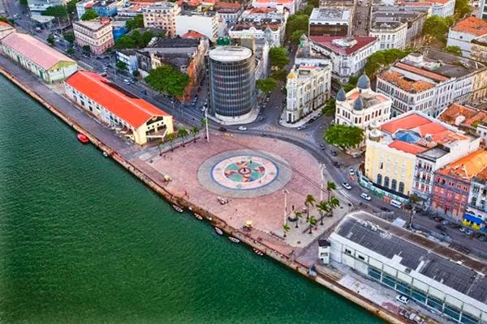
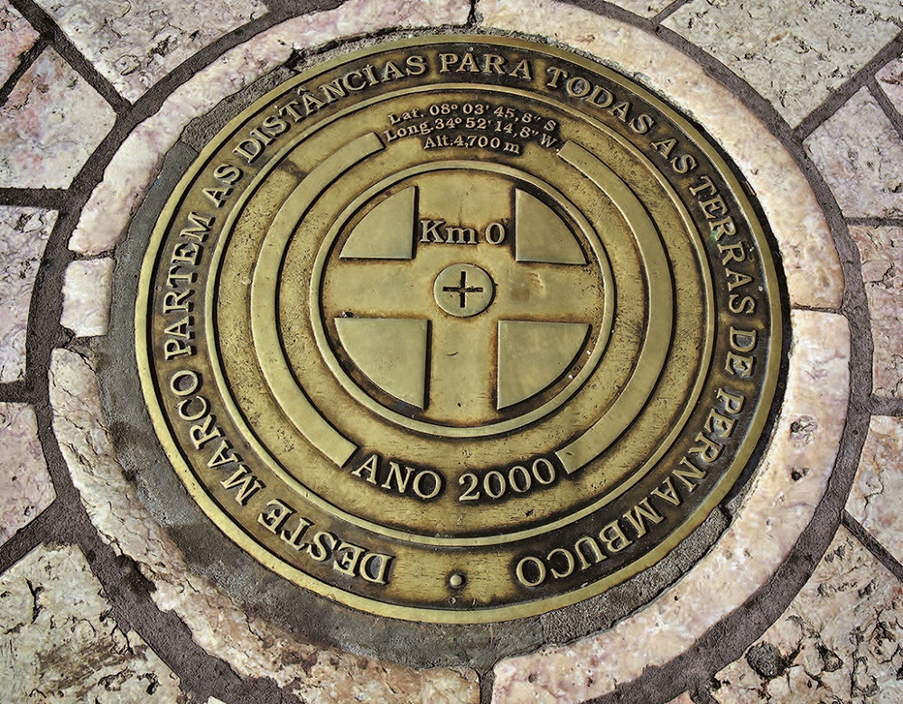
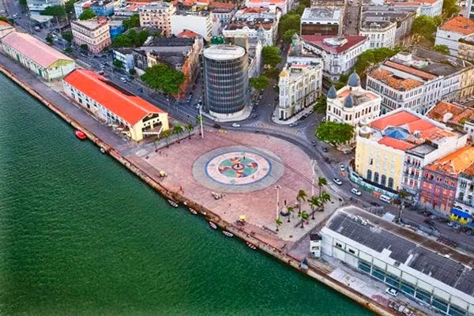
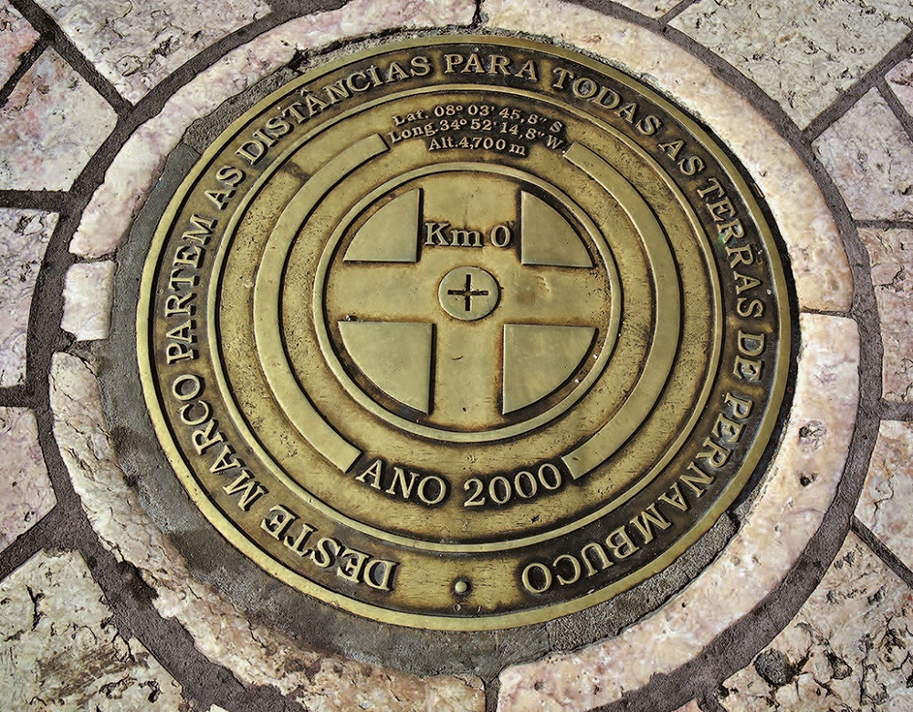

Recife, cidade Maravilhosa!
Recife é a capital do estado de Pernambuco, localizado no nordeste do Brasil. É uma cidade de grande importância histórica, cultural e econômica na região nordeste do país. Uma cidade que combina sua herança histórica com uma cultura vibrante e uma economia em crescimento, tornando-a um destino atraente para visitantes e uma área de grande influência na região nordeste do Brasil.
O Marco Zero é um dos pontos turísticos mais emblemáticos de Recife, Pernambuco, e tem um significado especial para a cidade. Aqui está um pouco mais de informações sobre o Marco Zero:
- Localização: O Marco Zero está localizado no Bairro do Recife, na área conhecida como Recife Antigo, próximo ao encontro dos rios Capibaribe e Beberibe. Essa área é conhecida por sua rica história e arquitetura colonial.
- Significado histórico: O Marco Zero representa o ponto a partir do qual a cidade de Recife foi originalmente fundada em 12 de março de 1537 pelos colonizadores portugueses. É, portanto, um local de grande importância histórica, pois marca o início da história da cidade.
- Estrutura: O Marco Zero é marcado por uma grande escultura circular que simboliza o mapa do Brasil, com um tótem no centro que representa a cidade de Recife. O monumento foi projetado pelo escultor Francisco Brennand e inaugurado em 2000.
- Turismo: O local atrai visitantes de todo o Brasil e do mundo, que vêm para apreciar a beleza da escultura e também desfrutar das vistas deslumbrantes dos rios Capibaribe e Beberibe. É um local popular para tirar fotos e admirar o pôr do sol sobre o rio.
- Circuito cultural: O Marco Zero faz parte do Circuito Cultural da Praça do Marco Zero, que inclui outros pontos de interesse, como o Museu Cais do Sertão, o Museu Paço do Frevo e a Casa da Cultura. Esses locais oferecem aos visitantes uma oportunidade de explorar a cultura e a história da região.
- Eventos: A área do Marco Zero é frequentemente usada para eventos culturais e festivais, incluindo apresentações musicais, exposições de arte e celebrações durante o carnaval. É um ponto de encontro importante para as festividades locais.
O Marco Zero não é apenas um marco histórico, mas também um local simbólico e culturalmente significativo em Recife, que atrai tanto moradores quanto turistas que desejam conhecer mais sobre a história e a cultura da cidade. Além disso, sua localização à beira do rio oferece uma vista deslumbrante e uma atmosfera única para os visitantes.
 


Conheça mais Recife: Aqui!